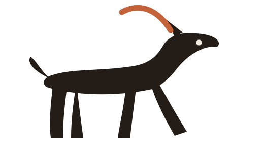

Ruta del día

Viernes 13 de noviembre · Loja
días seguidos. Tu mejor marca es 11.
16° y sin lluvia. Buen momento.
Sábado · Parque Jipiro · 06:30
GPS listo · ± 8 m · Centro de Loja
Cómo quieres correr
Al terminar sumas 3,0 km a la semana, de 12,4 a 15,4, y la racha sigue en 6 días.
kilómetros
Faltan 1,2 km para cerrar la vuelta de 3,0
Parciales
kilómetros · 6:04 el km, 6 s mejor que tu media
La racha queda en 7 días. Hoy ya cuenta.
Cuéntalo
Ida y vuelta junto al Malacatos
Orilla norte, zona tranquila
Vuelta a la laguna
Subida con viento y vista
San Cayetano, a la sombra
Cinco recorridos de la ciudad, del Malacatos al Villonaco.
Corres con Runcity desde 2024
El avatar de perfil, quieto sobre el papel.
Se avisa a tus contactos con tu posición y se abre la llamada al ECU 911. Nada sale hasta que confirmes.